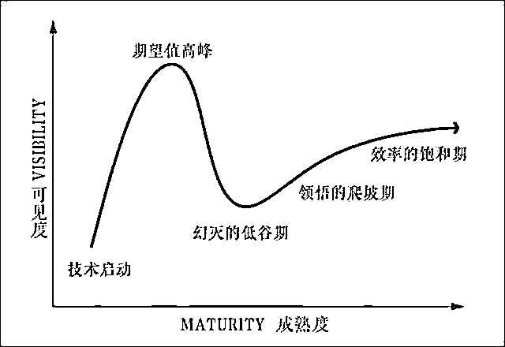
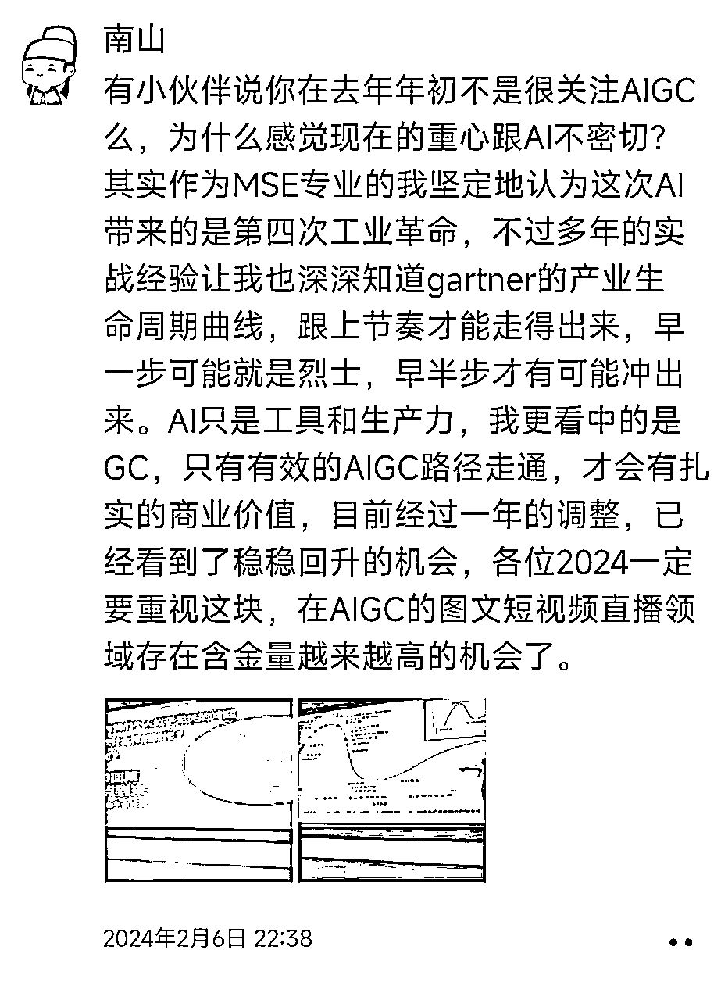
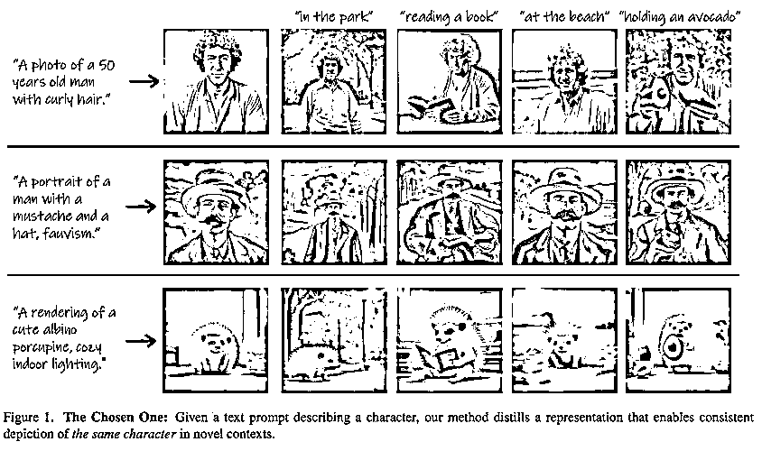
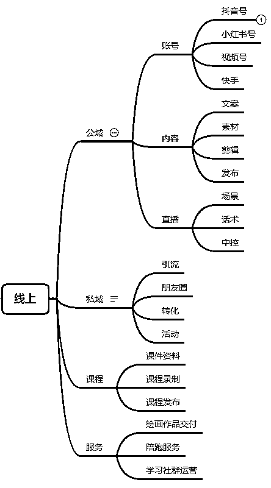
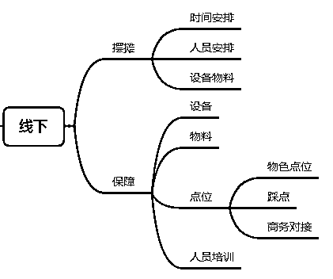

来源：https://mzi2s7g44u.feishu.cn/docx/ArtvdM8Q6oSjiyxwf6pcSdNDnQf
大家好，我是南山，主业是做短视频直播私域的流量操盘和IP孵化。
从去年年初chatGPT爆火后，我就开始就密切关注跟进AIGC（Artificial Intelligence Generated Content）变现的商业化应用。
亦仁在生财经常提到一个重要的商业判断逻辑，就是重视异常值，异常值如果看准了抓对了，当中存在巨大价值。
这次想给大家分享一下我对AIGC商业化元年这一重要异常值的判断分析，同时给到大家一些建议和介绍我们正在做的一些尝试。
在此之前，还是先说一下去年我们在AIGC方向上的一些尝试，作为一直在流量一线的全域流量操盘手，我对于UGC和PGC非常熟悉，当看到这一波生成式AI技术的突破后，就意识到AIGC的时代要来了，于是在去年年初确定要重点跟踪AIGC变现方向。
在去年4月，我就组织人手进行了两个方向的测试，一个是AI小说推文，一个是AI图文带货，测试完成后，认为前者还有待完善，不适合做商业化，最后选定了AI图文带货作为一个 AIGC变现方向的实践项目。然后我组织了10多个小伙伴进行实战，并最终跑通了流程，拿到了一定的结果，最爆的AIGC内容一晚上就跑了180多万观看量。
后来对于AI公众号文章写作赚取流量主收益等其它几个热点方向也进行了测试，对AI数字人直播、AI无人直播、AI电商商品图等方向进行全面的跟踪了解，总体说是密切关注AIGC的一线热点应用。
不过我去年的主要业务重心并不在AI方向，还是在短视频直播私域和IP孵化合作的操盘项目上，也有小伙伴问过我去年为什么没有all in AI，我在之前的朋友圈也解释过我的想法。
作为软件工程MSE专业的我，坚定地认为这次AI带来的是第四次工业革命，第一次工业革命是蒸汽机牵头，第二次工业革命是电力牵头，第三次工业革命是信息技术和互联网牵头，第四次工业革命是AI和AGI牵头，这次的前景更加广阔，对人类社会的变革一定是颠覆性的。
不过另一方面，过往的多年一线实践的经历，让我也很清楚地认识到gartner的产业生命周期曲线的规律，一项技术从出现到完善再到商业化成熟应用，一定是大致有一个甚至叠加多个如下图一样起伏的曲线。跟上节奏才能走得出来，早一步可能就扛不过图中的低谷期成为烈士，能踩好节奏才有可能冲出来。

为什么会这样呢，以AIGC来说，AI是更高效的工具和生产力，核心是GC，只有有效的商业化可变现的路径走通，才会有扎实的商业价值，才能正常发展壮大，否则就是技术还不够成熟，或者成本效率达不到商业化要求而不可持续。

2月初我在朋友圈也说，目前经过一年的调整，已经看到了稳稳在回升的机会，在AIGC的图文短视频直播领域存在含金量越来越高的机会了。
那么过了一个多月的现在，我想说的是，这个趋势在春节后已经越来越明显了，有了明确的非常有价值的信号了，值得我们每个人重视。
典型的标志就如3月初MidJourney推出的consistent characters功能，可以连续多次在生成的图片中保持主体角色的一致性，说重点就是人脸可以保持一致了。

这个功能感觉从技术上并不是很大的一步，就像是正常的功能升级，但其现实意义却非常大。这是之前文生图应用中最大的痛点之一。
我们去年在测试AI小说推文项目的时候，就遇到了生成的多张图的主角人物形象不一致的问题，很影响生成内容的连贯性，导致用户体验不好，比如设定的男主，每张图片张得都不一样，内容的带入感就差了。如果要解决当时只能手动换脸，效率很低。
这次升级的这个功能相对于MJ来说，是技术上升级的很小一步，但是对应商业化应用而言，却是很大一步，有助于创作者创作非常一致的故事内容，是AIGC方向的巨大利好，对于AI图文，AI小说推广，AI绘本，甚至AI动画等应用都有巨大的价值。
以AI绘本为例，之前分享过给家里的宝宝做定制化绘本的一个项目，就是用家里宝宝的照片、家庭成员的照片作为绘本的主角原型，去编各种故事，实现定制化从而实现高客单高利润。这个在去年是很麻烦的，今年的效率就大大提升了，一个单子可以很快搞定，赚钱效率高了，就可以商业化复制了。
这样的例子已经越来越多了，比如去年AI绘画还会有六个指头、多一条腿等的情况发生，现在已经能很好的控制了，生成的效果越来越好了，风格越来越多了，也可以应用到装饰装修等特定的精细化场景中了，满足了商业化对交付结果的需求。
去年年底推出的DomoAI视频生成动漫功能效果也越来越好了，目前在嘴型上跟随的还不是很好，但用在场景类内容上效果很有保证，很多方向的内容变现又有机会了，而且我相信对嘴型的技术问题也是接下来技术完善的重点，很快也就能迭代实现了，到那个时候商业化的价值就更明显了。
这种情况在还未正式开放的Sora上，肯定也是一样，一开始做商业化可能很差点儿意思，但很快随着技术的完善就有价值的商业变现很快就能逐步跟上了。
因此可以说，从去年AI大模型的技术方向被点亮科技树后，经过应用方向技术的迭代完善，到今年已经到了AI技术一小步，AI变现一大步的阶段了，2023是AI大模型技术元年，2024会是AIGC商业化元年。
这个就是我今天想说的最重要的判断，相比于去年，会有更多好的商业化机会出现，大家可以瞄瞄方向扣动扳机了，
在筛选AIGC项目的时候，我还想给大家几点建议，以下几种情况的项目大家要慎重：
变现模式不清晰；
实现变现环节太多；
时效上投入产出比低变现的密度不够；
竞争门槛过低容易成红海；
竞争优势不明显；
生命周期太短；
如果以上某个方向的项目具备2个以上的点，建议新手特别是个人慎重选择。关于选择和避坑的后面我还会专门再讲，感兴趣的小伙伴可以评论区顶一下。
接下来说一下我们在做的我认为很有意思的一个尝试，北京和上海的小伙伴应该都知道，3月份我们也选择了一个方向作为今年首个共创实践项目，就是做AI绘画摆摊项目，这个也有圈友拆解或者实践过。
这个项目包含了线下的摆摊业务，相对于纯线上而言就有些过于重，单点体量有限且很难快速上量，因此这个项目看起来一点不性感。但事情要辩证地看，在互联网线上流量见顶的当下，一定的重就能构成一定的护城河，不会那么卷，线下不能上量我们就想办法在线上去上量。
因此我们对这个业务的定位是线下开花线上香，把这个项目的重心放到线上去引流和放大，把线下定位成是给线上对应的抖音视频号小红书帐号提供素材和场景。每个摊位对应一套线上帐号，线上引流卖AI绘画摆摊课程，顺便服务线上想买绘画作品的人。这样这个项目还是可以看作一个线上项目，线下就是内容拍摄场景而已。
以此为核心，我们去构建一整套线上+线下的完整的打法。


现在已经组织了二十多个小伙伴开始行动了，等接下来有进展了再跟大家反馈，接下来我们也会在更多城市去开展落地。同时，在提供绘画服务的基础上，还可以提供AI老照片修复，数字人永生，AI学习机销售等叠加业务。
今年合适的方向很多，相信很多有价值的项目和玩法也会在社群涌现，大家一定要多多关注，更重要的是要敢于扣动扳机，敢于下场，犯错的成本很低，错过的代价很高 ，今年的AIGC变现大赛道，更值得期待。